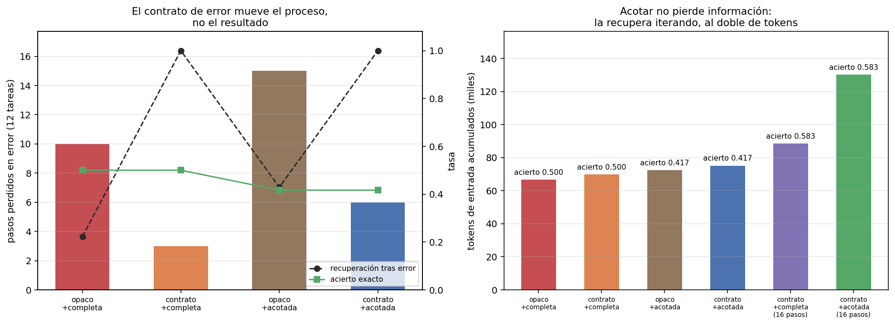

01 — Qué es un harness y por qué decide más que el modelo¶
El bucle, y el paso que nadie mira¶
Un agente es un bucle de cuatro pasos:
graph LR
P["percibir<br/>qué ve el modelo"] --> D["decidir<br/>el modelo elige"]
D --> A["actuar<br/>se ejecuta la tool"]
A --> O["observar<br/>qué vuelve al contexto"]
O --> P
style D fill:#bdf,stroke:#333,color:#1a1a1a
style O fill:#fd9,stroke:#333,color:#1a1a1aDe los cuatro, el modelo solo hace uno. Los otros tres los escribe quien construye el sistema: qué información entra, qué acciones están disponibles, y —el que casi todos los tutoriales despachan como logging— qué texto vuelve al contexto después de actuar.
Ese cuarto paso es el objeto de esta sección. La observación no es un registro de lo que pasó: es el único canal por el que el agente se entera del estado del mundo. Si la observación miente, omite o no dice qué salió mal, el modelo decide sobre una representación equivocada del mundo — y va a decidir mal por más capaz que sea.
La analogía útil no es de software. Un agente de IA es un agente en el sentido de la teoría económica: un decisor con información limitada que actúa por cuenta de un principal. El harness es el conjunto de reglas del entorno que ese decisor enfrenta: su restricción de información, su menú de acciones, y la señal que recibe después de cada una. Cuando un agente rinde mal, la primera pregunta no es "¿le pongo un modelo mejor?" sino "¿qué regla del entorno hizo que esta fuera la decisión razonable?".
La anatomía mínima, sin framework¶
El discurso de la industria sugiere que construir un agente requiere adoptar un
framework. El bucle completo de harness_lib.py son
cuatro objetos y unas ciento veinte líneas:
| Objeto | Qué es |
|---|---|
Herramienta |
Nombre, descripción, esquema Pydantic de argumentos y la función. El JSON Schema que ve el modelo sale del mismo esquema que valida la llamada: una sola fuente de verdad. |
ToolRegistry |
Despacha la llamada y traduce el fallo a texto. Es donde el diseño del entorno se convierte en algo que el modelo lee. |
AgentLoop |
Los cuatro pasos y las condiciones de corte. Cuarenta líneas. |
Trayectoria |
El registro de qué se hizo, no solo qué se respondió. Es el insumo de §7 y la razón por la que existe como objeto y no como log. |
Y un quinto que es el objeto de estudio del módulo:
class HarnessConfig(BaseModel):
max_pasos: int = 8
max_chars_observacion: int | None = None # None = la observación entra entera
estilo_error: Literal["opaco", "contrato"] = "opaco"
max_repeticiones: int = 3
Cambiar cualquiera de esos campos deja el modelo, las herramientas y la tarea intactos, y altera solo lo que el agente percibe. Todo delta medido en esta masterclass es un delta de este objeto.
Las herramientas no son de juguete: buscar_corpus es el BM25 de 02,
leer_norma lee los archivos reales de shared/corpus_chileno/ paginados, y
vecinos_grafo recorre el grafo normativo auditado de 05. Los fallos que siguen
son fallos reales del dominio, no artefactos de un entorno inventado para la demo.
El experimento: factorial 2×2¶
Doce tareas congeladas en
examples/tareas-agente.json. No se anotó nada
nuevo: cada tarea copia la pregunta y los documentos esperados de un golden ya
auditado del repo — cinco de recuperación y tres de abstención del golden de
01-evals, y cuatro de las competency questions de 05. La métrica es objetiva
y no usa juez LLM:
el conjunto de documentos que el agente cita contra el conjunto esperado.
Se cruzan dos reglas del entorno, con todo lo demás fijo (mismo gpt-4o-mini a
temperatura 0, mismas herramientas, mismo prompt de sistema, mismo tope de ocho
pasos):
| observación completa | observación acotada a 1.200 caracteres | |
|---|---|---|
error opaco (Error: ToolError) |
brazo 1 | brazo 3 |
| error con contrato (esperado / recibido / siguiente paso) | brazo 2 | brazo 4 |
Cruzarlos importa. La primera versión de este experimento tenía dos brazos —"todo mal" contra "todo bien"— y produjo un delta agregado que no se podía atribuir a ninguno de los dos cambios. Con cuatro brazos, el efecto principal de cada factor es el promedio de su efecto en los dos niveles del otro, y se puede leer por separado.
métrica opaco+completa contrato+completa opaco+acotada contrato+acotada
----------------------------------------------------------------------------------------------------------
acierto exacto 0.500 0.500 0.417 0.417
F1 de docs citados 0.556 0.556 0.417 0.417
pasos promedio 4.75 4.83 5.33 5.33
pasos con error 10 3 15 6
recuperación tras error 0.222 1.000 0.429 1.000
llamadas redundantes 1 0 5 3
tareas sin respuesta 2 2 5 5
tokens de entrada 66618 69896 72477 75192
Efectos principales:
métrica efecto contrato efecto acotar
----------------------------------------------------------------
acierto exacto 0.000 -0.083
F1 de docs citados 0.000 -0.139
pasos con error -8 4
recuperación tras error 0.675 0.103
llamadas redundantes -2 4
tokens de entrada 2996 5578
Nota sobre la métrica. Una tarea que se queda sin pasos también termina con cero documentos citados, igual que una abstención correcta. La primera versión de la medición las confundía y regalaba acierto perfecto en toda la familia de abstención; el agujero apareció al correr §2 y está tapado:
evaluar_trayectoriaexige que el bucle haya respondido para puntuar. No responder es un fallo, no una abstención. Los números de arriba ya son los corregidos.

Resultado 1: el contrato de error arregla el proceso y no mueve el resultado¶
El efecto del contrato de error sobre el acierto es exactamente cero. Sobre el proceso es enorme: los pasos perdidos en error caen de 10 a 3 (y de 15 a 6 con observación acotada), y la recuperación tras un error pasa de 0,222 a 1,000.
Publicar esto tal cual importa más que el número bonito que se esperaba. La lectura correcta no es "los mensajes de error no sirven": es que arreglaron exactamente el mecanismo que atacan —el agente ya no se queda pegado en un fallo— y que las tareas que fallaron en este conjunto no fallaban por eso.
El caso que lo muestra entero es la tarea t-08, "¿Qué documentos dependen en
hasta dos saltos del DS 250?". Con error opaco, la trayectoria completa es:
0 vecinos_grafo(doc_id="ds-250", tipo_relacion="aplica", direccion="out") -> Error: ToolError
1 vecinos_grafo(doc_id="ds-250", tipo_relacion="aplica", direccion="out") -> Error: ToolError
2 vecinos_grafo(doc_id="ds-250", tipo_relacion="cita", direccion="out") -> Error: ToolError
3 vecinos_grafo(doc_id="ds-250", tipo_relacion="deroga", direccion="out") -> Error: ToolError
4 vecinos_grafo(doc_id="ds-250", tipo_relacion="interpreta", direccion="out") -> Error: ToolError
5 vecinos_grafo(doc_id="ds-250", tipo_relacion="modifica", direccion="out") -> Error: ToolError
6 vecinos_grafo(doc_id="ds-250", tipo_relacion="reglamenta", direccion="out") -> Error: ToolError
7 vecinos_grafo(doc_id="ds-250", tipo_relacion="aplica", direccion="in") -> Error: ToolError
Ocho pasos, ocho errores, cero información. Y acá está lo importante: el agente no
se quedó paralizado, hizo exactamente lo racional. Le dijeron que la llamada
falló y no cuál de los tres argumentos estaba mal, así que enumeró
sistemáticamente el espacio del parámetro que podía enumerar —los seis tipos de
relación— y después empezó con las direcciones. Es una búsqueda ordenada sobre la
dimensión equivocada, porque el error nunca dijo que el problema era doc_id:
"ds-250" no es un identificador del corpus.
El mismo modelo, en el mismo paso 0, con el error que sí lo dice:
0 vecinos_grafo(doc_id="ds-250", ...) -> ERROR en 'vecinos_grafo'. Esperado: un doc_id
presente en el grafo normativo. Recibido: ds-250. Siguiente paso: usá
'buscar_corpus' para ubicar el documento primero.
1 buscar_corpus(consulta="DS 250") -> ok [decreto-03-reglamento-compras-publicas.txt#0] DECRETO SUPREMO Nº 250
2 vecinos_grafo(doc_id="decreto-03-reglamento-compras-publicas.txt", ...) -> ok
3..7 seis travesías productivas del grafo
Un paso de error, y el resto del presupuesto gastado en trabajo útil. Las dos trayectorias fallan la tarea —vuelvo a eso enseguida— y una métrica de resultado las califica idéntico. Esa ceguera es el argumento de §7 y acá ya se puede ver.
Un agente que repite ocho veces una llamada inútil no es tonto: está en un entorno que no le informa qué falló. El arreglo cuesta veinte líneas en el
ToolRegistryy no requiere cambiar de modelo.
Resultado 2: acotar la observación no pierde información, la cobra en tokens¶
Acotar la observación a 1.200 caracteres baja el acierto de 0,500 a 0,417 y triplica las tareas que ni siquiera llegan a responder (de 2 a 5). La conclusión tentadora —"truncar destruye información"— es falsa, y hace falta un par de brazos más para verlo: el mismo factor, repetido con el tope de pasos al doble.
métrica contrato+completa contrato+acotada +completa (16) +acotada (16)
--------------------------------------------------------------------------------------------------
acierto exacto 0.500 0.417 0.583 0.583
F1 de docs citados 0.556 0.417 0.639 0.583
pasos promedio 4.83 5.33 5.58 7.00
tareas sin respuesta 2 5 1 2
tokens de entrada 69896 75192 88579 130315
efecto de acotar con 8 pasos: -0.083
efecto de acotar con 16 pasos: +0.000
Con presupuesto holgado, el efecto de acotar sobre el acierto es exactamente cero: 0,583 en los dos brazos. Lo que no es cero es el precio — 130.315 contra 88.579 tokens de entrada, un 47% más por el mismo resultado.
Hacía falta el cuarto brazo. Comparar el brazo acotado de 16 pasos contra el completo de 8 —la comparación que salía sola— movía dos cosas a la vez y habría dejado concluir que truncar mejora el acierto, cuando lo que mejora es tener más iteraciones.
El truncado no borró la información: la puso detrás de una iteración más. Y una iteración más no cuesta el fragmento que se ahorró — cuesta reenviar toda la conversación anterior, porque cada llamada del bucle manda el historial completo.
Esa es la asimetría central del context engineering y el punto de partida de §2:
En un bucle agéntico, ahorrar contexto por observación es barato y ahorrar iteraciones es caro. El costo del contexto no es lineal en lo que guardás: es cuadrático en cuántas veces tenés que volver a mandarlo.
Lo que ninguno de los cuatro brazos arregla¶
Las tres familias de tarea se comportan de forma muy distinta, y el harness no explica nada de esa diferencia:
familia acierto (los cuatro brazos)
------------------------------------------------
abstencion 0.667
estructural 0.500
recuperacion 0.400 (0.200 con observación acotada)
La abstención es la familia más sólida y es idéntica en los cuatro brazos: dos de
las tres tareas donde la respuesta correcta es "no consta en el corpus" se resuelven
siempre, y la tercera (t-10, sobre la Ley de Transparencia) agota los ocho pasos
alternando buscar_corpus y leer_norma sobre algo que no existe. Con dieciséis
pasos sí concluye —en el paso dieciséis, justo en el límite—, lo que dice que el
agente no se niega a abstenerse: tarda mucho en convencerse. Cuánto buscar antes de
declarar que algo no está es una decisión de diseño que ninguno de los dos factores
de este experimento toca.
Las estructurales se parten al medio, y la mitad que falla lo hace por una razón que
t-08 deja a la vista: la pregunta pide el cierre transitivo a dos saltos, y
vecinos_grafo devuelve un salto de un tipo de relación por llamada. Cubrir dos
saltos sobre seis tipos de relación y dos direcciones no entra en ocho pasos, ni en
dieciséis. Ningún mensaje de error arregla eso: es un problema de granularidad de
la herramienta, la unidad de delegación está mal elegida. §3 lo diagnostica y lo
mide.
El espectro workflow → agente¶
"Agente" no es una categoría binaria y conviene no usarla como bandera. Lo que hay es un espectro según quién elige el siguiente paso:
| Quién decide el orden | Ejemplo en este repo | Costo | |
|---|---|---|---|
| Cadena fija | El programador | El pipeline RAG de 02: recuperar → rerankear → generar |
1 llamada |
| Ruteo | El modelo, una vez | El CostAwareRouter de 03 §10 |
1-2 llamadas |
| Bucle acotado | El modelo, hasta N veces | Este módulo | 2-8 llamadas |
| Autonomía abierta | El modelo, sin tope | Fuera de alcance acá | indeterminado |
Moverse hacia abajo compra flexibilidad y paga en tres monedas: costo (de 1 llamada
a 4,75 promedio en el brazo base), varianza (§8) y verificabilidad. La pregunta de
diseño no es "¿hago un agente?" sino "¿cuánta indeterminación en el orden de los
pasos me compra algo que la cadena fija no me daba?". Para diez de las doce tareas
de acá, un pipeline fijo de 02 hubiera bastado; las estructurales de dos saltos
son las que justifican el bucle.
Estado del arte (2026)¶
| Aspecto | Estado | Detalle |
|---|---|---|
| Bucle tool-use como patrón dominante | ✅ Consenso | Todo agente serio es este bucle; las diferencias están en el entorno, no en el bucle |
| Tool-calling nativo en la API | ✅ Estándar | Todos los proveedores grandes; el esquema JSON por herramienta es el contrato |
| Frameworks de agentes | 🟡 En disputa | Conviven frameworks pesados y el patrón "escribí el bucle vos"; no hay convergencia |
| Mensajes de error como canal de diseño | 🟢 Reconocido, poco medido | Se recomienda ampliamente; casi no se publican mediciones del efecto separado |
| Diseño experimental factorial en harness | 🔴 Raro | Lo habitual es comparar sistemas completos, donde nada es atribuible |
| Métricas de trayectoria | 🟡 En adopción | Ver §7 |
Lo que este experimento sugiere y no puede probar con n=12: que el orden de prioridades habitual está invertido. Se invierte primero en el modelo, después en el prompt y casi nunca en el texto que devuelven las herramientas — que es lo único de los tres que costó veinte líneas.
Límites de este experimento¶
- n = 12 tareas, un modelo, una réplica. Los deltas de proceso son grandes y consistentes en los dos niveles del otro factor; los de resultado (±0,083) están dentro de lo que una tarea que cambia de signo mueve. No se calculan IC acá: el aparato estadístico entra en §7, donde el objeto de estudio es la medición misma.
- Un solo modelo (
gpt-4o-mini). Un modelo más capaz probablemente infiera deError: ToolErrorlo que este no infirió. Eso ablandaría el resultado 1 sin tocar el 2, que es aritmético. - Temperatura 0 y caché congelado. La corrida offline reproduce exactamente las 327 decisiones de los cinco brazos, con cero llamadas a la API; no hay varianza de muestreo dentro de estos números, y por eso tampoco hay que confundirlos con una estimación de la varianza real.
- Las tareas vienen de goldens de retrieval y de grafo, no de un benchmark agéntico. Miden si el agente encuentra y cita la evidencia correcta, no si razona bien sobre ella.
Lo que viene en la próxima sección¶
El resultado 2 dejó el problema planteado: acotar la observación empuja el costo hacia las iteraciones, y cada iteración reenvía todo el historial. Eso convierte al contexto en un problema de asignación —cuántos tokens le doy a las instrucciones, a los esquemas de las herramientas, a la historia y a la evidencia recuperada— y no en un problema de almacenamiento. §2 mide las cuatro partidas de ese presupuesto sobre estas mismas trayectorias.
Conexiones¶
01 §9(eval harness): el mismo nombre, el otro sentido. Aquel orquesta evaluaciones; este orquesta acciones. §7 los reúne cuando el objeto evaluado pasa a ser la trayectoria.02(retrieval):buscar_corpuses el BM25 de esa masterclass. La novedad no es el buscador sino quién decide cuándo llamarlo.05 §2(grafo normativo):vecinos_graforecorre las 69 relaciones auditadas, con elfundamento—la cita literal— en la observación, para que el agente cite la fuente y no el grafo.05 §7(recorrido bajo demanda): la regla de decisión que ese módulo enunció sin tener quién la ejecutara.t-08muestra que ejecutarla necesita una herramienta de la granularidad correcta (§3).03 §6(idempotencia): las llamadas redundantes que se cuentan acá son inocuas porque todas las herramientas son de lectura. §6 levanta ese supuesto.- §7 (evaluar trayectorias): dos trayectorias con el mismo resultado y procesos
opuestos son el argumento entero de esa sección, y
t-08ya lo exhibe.